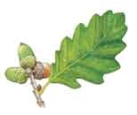
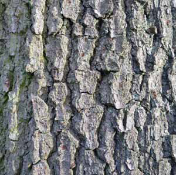

Leaves
The wavy leaves have large deep lobes and smooth edges. They are dark green, turning orangy-brown
in autumn.
Bark
The greyish bark has vertical cracks and knobbly ridges.
Flowers and seeds
The acorn is the ripened fruit or seed of the tree. It looks like an egg in a cup.
Male and female flowers are found on the same tree. Male flowers are long green catkins.
Female flowers look like buds with bracts at the tips of the shoots.
